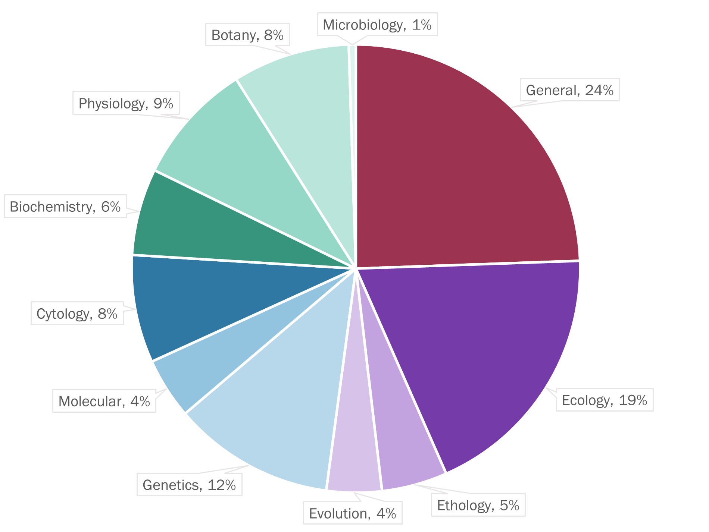

Welcome to this short article about IBOHKC! Here, I will go over just about all you need to know to ace the test. You can use the Table of Contents on the left to jump to different sections.
Before you get nervous, know that by just preparing, you are already better than half of the candidates. So sit back and enjoy!
Format
There will be 50 MCQs for you to complete in two hours.In the past two years, the paper has been partitioned into two sections of 25 MCQs with a 30-minute break in between. This is presumably a 'pandemic arrangement'. It is unknown whether this practice will continue when the contest is again held in-person. Winning a medal qualifies you for Phase I, after which you may progress through Phase II and III to eventually represent Hong Kong in the International Biology Olympiad.
The official medal lines have never been released. However, it is generally agreed that 20 translates to a Bronze, 30 to a Silver and 40 to a Gold. Note that these are just predictions.
Syllabus
I have reviewed all the available past problems and assigned each into one of eleven categories. I have further assorted each category into one of four groups, as delineated by colour in the pie chart below. However, do note that every biological discipline is closely intertwined, and questions often test the candidate’s knowledge on multiple fields.

General
This is both the easiest and hardest category to master. Easy, because no prior knowledge is needed to answer these questions; hard, because you must critically think and have ‘common sense’. Questions in this category can be further divided into three subcategories:
Graph-reading. One of the most common question types in IBOHKC is the interpretation of graphs. In recent years, some problem-setters have even inserted two pages of diagrams just to ask one question on them. Unless you are experienced in graph-reading, it is recommended that you skip these abnormally long graph questions. While the data overload may at first seem daunting, the key to cracking these questions is to read the options first. Simply read each option, return to the corresponding graph and verify whether it is correct.Some questions do require subjective judgment, e.g. 'good' or 'a great difference'. In this case, check if there are any asterisks (*) in the graph; the more asterisks, the more significant the difference. Otherwise, trust your instincts. Read the title, read the axes and read the trend. Be confident when confronted with these questions: you will only need to spend a bit more time, unless you freak out.
Biological sense. Many explanations of biological phenomena are valid. Few are sound. It is your task to determine whether each statement is true, likely and important.Credits to the English Debating Team for this point. Through frequent exposure to biological texts, you will eventually develop this sense; however, even the most seasoned competitors often struggle with judgment. In any case, do NOT overthink.
Common sense. Many biological phenomena pervade daily life. For example, while your local barber may not know what is CRISPR-Cas9, they certainly know inserting a tomato gene into a fish does not make it a tomato-fish hybrid. It may be easier to crack a question when you know the context behind. Again, do NOT overthink and trust your instincts.
Others
Your performance in the ten other sections depends on your raw strength. There is no quick way to master every topic. But what if you only had a week left?
Do all the past papers. Beyond biological knowledge, you should know what exactly problem-setters want you to demonstrate. Be honest: time yourself and do every question seriously. A few of the model answers are wrong.
Pick up a review book.CliffsNotes' AP® Biology is not a bad idea. However, NEVER substitute review-book cramming with actual learning.
Ask for help. This goes without saying, but you should never be afraid to ask for help on something you don't know. Contact your biology teacher. Alternatively, you can find my email on my about page. I will try my best to address your enquiries.
English?
It is often joked that the mastery of English is the most important part in preparing for the IBOHKC. And guess what, there is some truth to this statement. Many competitors often panic upon seeing a new word or shudder at the sight of a full-page wall of text. Don’t. Here are two tips to help you get through:
Write the key points as you go. In IBOHKC, you have 2 hours for 50 questions: that is, 2.4 minutes for each question. Rereading a question would be an immense loss of time, especially if the paragraphs are lengthy. Coincidentally, it is in these long questions where you are most prone to losing the logical flow. To avoid wasting unnecessary time, jot down the key points as you read the question so you can reference them later.
Refer to the Chinese version. It is fine if you do not know what 'vasodilation' means. However, it is inexcusable if you don't read the provided Chinese translation, i.e. 血管擴張.
Conclusion
If there is one last thing you need to know, it is not to be anxious. The intuition you have built from your weeks of hard work will guide you towards the right answers. Write with confidence and walk through the paper with panache. Good luck and I hope to see you in Phase I!